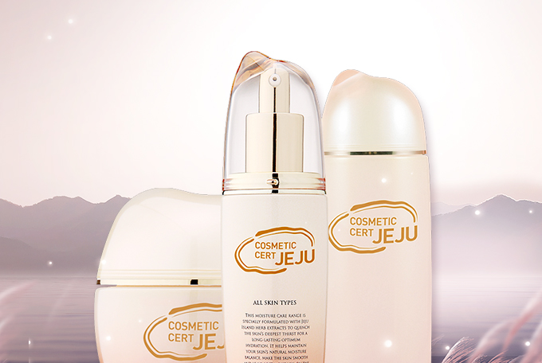
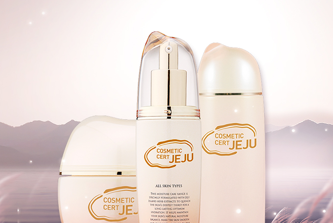
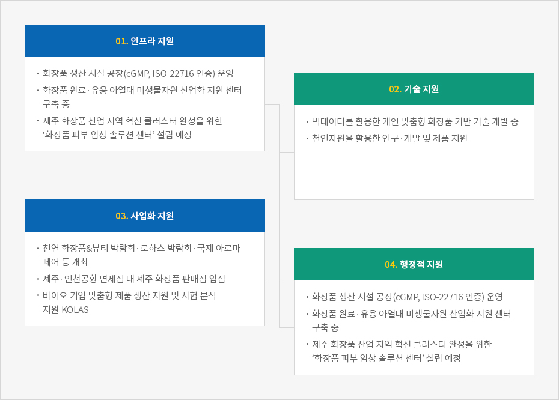

바이오 테크놀로지
- Home
- 투자환경
- 미래 유망산업
- 바이오 테크놀로지
화장품 원료산업
 

제주의 깨끗한 독특한 식생환경으로부터 추출하는 천연 자원을 활용한 화장품 산업은 지속적인 행정·재정적 지원을 바탕으로 매해 생산량과 산업 규모 그리고 매출의 성장을 거듭하고 있습니다.
특히 아시아에서 큰 성공을 얻은 제주 화장품 소재와 더불어 원료 생산부터 판매까지 완성된 탄탄한 밸류체인, 그리고 수준 높은 연구 시설을 갖추고 있습니다.
또한 제주테크노파크는 국제화장품원료집 ICID에 등재된 제주 생물자원 소재 화장품 원료를 선별해 ‘제주산 천연 화장품 원료 자료집’을 발간했으며, 제주 화장품의 가치를 높이고 경쟁력을 강화하기 위해 ‘제주화장품인증제도’를 실시하고 있습니다.
제주는 이미 이름 자체로 동아시아에서 높은 인지도를 자랑하는 브랜드입니다. 청정 제주 브랜드로 생산되는 바이오·화장품 원료 산업은 무한한 가능성을 지니고 있습니다.
제주의 대표 바이오자원
-
깨끗한 물
- 오랜 기간에 걸쳐 화산 암반층을 통과하며 불순물이 걸러져 청정함
- 제주특별자치도개발공사의 ‘삼다수’는 제주 지하수를 상품화해 성공한 사례
- 1998년 시판 이래 20년간 국내 시장 판매 1위, 2018년 국내 최대 판매량 84만 톤 기록
-
용암 해수
- 바닷물이 화산 암반층에 여과되는 과정에서 생성된 염분을 함유한 지하수
- 칼슘·마그네슘·바나듐·게르마늄 등 천연 유용 미네랄 함유로 다양한 활용 가능성
- 현재 용암해수산업화지원센터 1·2호에 화장품·식품 등 관련 업체 입주
-
화산송이
- 마그마가 폭발할 때 생성된 천연 세라믹으로, 제주 전역에 걸쳐 분포
- 다양한 미네랄 성분 함유, 흡수·흡착·항균 기능, 원적외선과 음이온 방출 등에 탁월
-
해조류
- 모자반, 감태, 미역, 톳 등 700여 종의 다채로운 해조류 서식
- 식용·의약품·화장품 원료로 각광
-
동백·녹차·유채·감귤
- 제주의 대표 특산품으로, 제주의 특색을 담은 검증된 화장품 원료
- 자연주의 제주 화장품 브랜드들이 이미 다양한 제품으로 선보이고 있음
바이오 산업을 위한 다양한 지원


-
01.인프라 지원
- 화장품 생산 시설 공장(cGMP, ISO-22716 인증) 운영
- 화장품 원료·유용 아열대 미생물자원 산업화 지원 센터 구축 중
- 제주 화장품 산업 지역 혁신 클러스터 완성을 위한 ‘화장품 피부 임상 솔루션 센터’ 설립 예정
-
02. 기술 지원
- 빅데이터를 활용한 개인 맞춤형 화장품 기반 기술 개발 중
- 천연자원을 활용한 연구·개발 및 제품 지원
-
03. 사업화 지원
- 천연 화장품&뷰티 박람회·로하스 박람회·국제 아로마 페어 등 개최
- 제주·인천공항 면세점 내 제주 화장품 판매점 입점
- 바이오 기업 맞춤형 제품 생산 지원 및 시험 분석 지원 KOLAS
-
04. 행정적 지원
- 화장품 생산 시설 공장(cGMP, ISO-22716 인증) 운영
- 화장품 원료·유용 아열대 미생물자원 산업화 지원 센터 구축 중
- 제주 화장품 산업 지역 혁신 클러스터 완성을 위한 ‘화장품 피부 임상 솔루션 센터’ 설립 예정